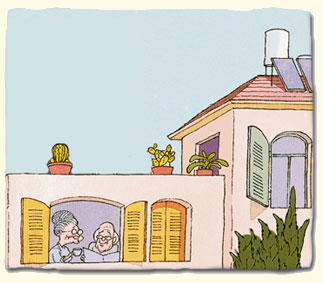

יתרונות הגישור
היתרונות רבים מאוד וניגע במקצתם:
- פתרון מוסכם ורצוי לכל הצדדים: תוך השגת מענה למרב האינטרסים של הצדדים וזאת במקום החלטה הנקבעת על ידי בית משפט או בורר שאינה בהכרח לשביעות רצון הצדדים או מי מהם.
- חסכון בזמן: ניתן להגיע להסכם בתוך ימים או שבועות ספורים.
- חסכון בכסף: היקף הוצאות הצדדים לצורך גישור הנו, ככלל, חלק קטן מההוצאות הכרוכות בהליך משפטי.
- סודיות: בהליך הגישור נשמרים בקפדנות פרטיות הצדדים וכל מידע אישי או עסקי הנחשף במהלכו.
- פגישה נפרדת: האפשרות הייחודית של המגשר להיפגש עם כל אחד מהצדדים בנפרד מעניקה להליך הגישור יתרון משמעותי. היכולת לבחון בסודיות עם כל צד את חולשותיו ורצונותיו מאפשרת למגשר המנוסה להוביל את הסכסוך לסיומו תוך מענה למרב הצרכים והרצונות, כולל הכמוסים שבהם.
- תקינות היחסים בין הצדדים לסכסוך: פתרון הסכסוך בדרך של הידברות, מסייע לצדדים לשמור על מערכת יחסים תקינה ואף לשפרה. הדבר חשוב גם ביחסים שהסתיימו ומקבל חשיבות עצומה ביחסים נמשכים הן בין בני זוג שימשיכו להיות, על כל המשתמע מכך, הורי הילדים גם לאחר פרידה וגירושין והן בסכסוכים עסקיים רבים.
- אפשרות חזרה מההליך: אם לא הושג פתרון בגישור, יוכלו הצדדים לפנות לבית המשפט או לנקוט בכל דרך אחרת ליישוב הסכסוך.